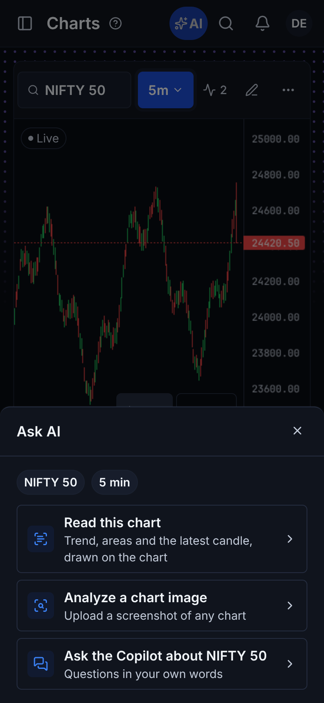
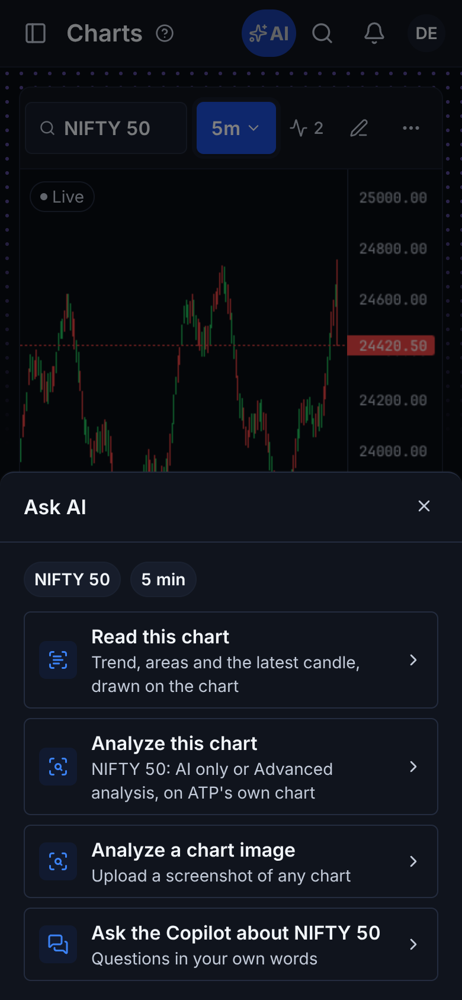
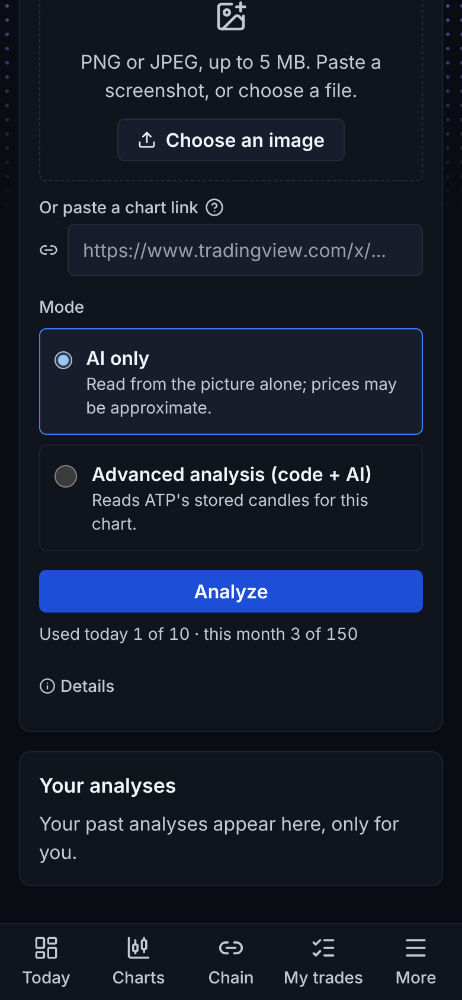
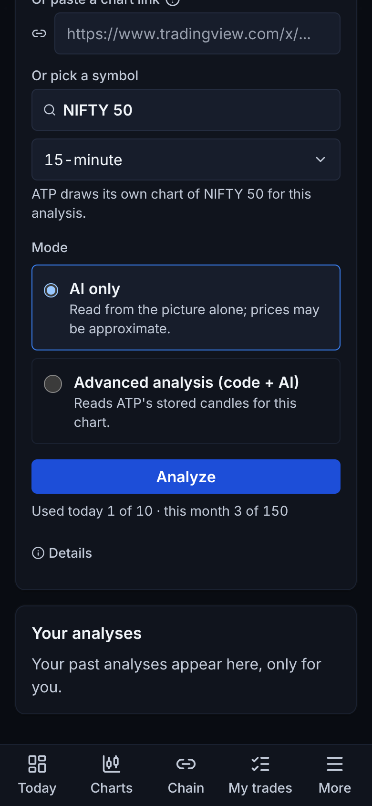
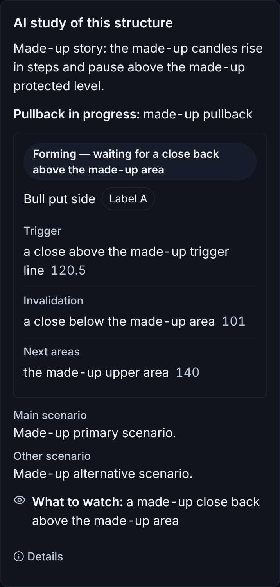

Owner 5 Nov "Default yes, but 1. Give Both options as it is". Mocked made-up data; before = main before AN-1.




Terminal: the shell's Ask AI offers the same "Analyze this chart" for the Terminal's main chart symbol (the timeframe is picked on Analyze a chart).
Before: the AI part showed only the story, what to watch and the scenarios behind a fold. After: the whole study - state, setup (status, side, label, trigger / invalidation / next areas with the reading's exact prices), evidence, both scenarios, what to watch.
